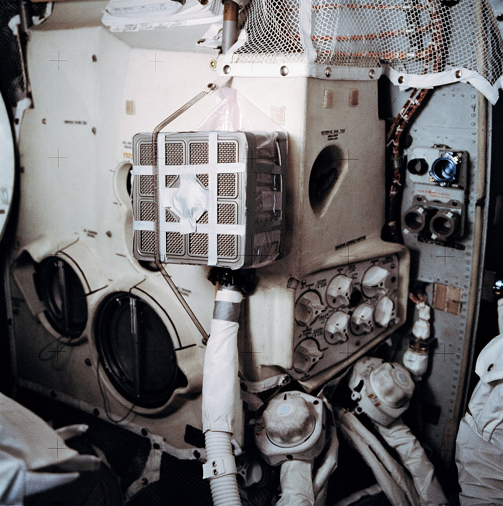

“Okay, Jack. Did anybody ever tell you that you got a 60-day extension on your income tax. Over.”
Joe Kerwin was speaking from Mission Control in Houston to Jack Swigert, one of the three astronauts on Apollo 13. Swigert’s tax return had been a running joke in Mission Control, according to the editors of the Apollo Flight Journal, and he answered in kind: “I think somebody said that when you are out of your country, you get a 60-day extension.” The crew were in serious danger, and the joke gave everyone a moment’s break from it. Then, 90 hours, 22 minutes and 50 seconds into the mission, Kerwin got to the point: “I’m ready to start into the procedure.”
Why the crew needed a procedure
About 56 hours into the flight, on the way to the Moon, an oxygen tank in the service module failed. According to NASA’s mission report, its pressure rose abnormally and then dropped to zero within about 100 seconds, and the pressure in the second tank fell too. The service module carried the oxygen for breathing and for the fuel cells that made the spacecraft’s electricity. With that oxygen gone, the mission was aborted.
The command module, the capsule the crew would ride back through the atmosphere, now had only its batteries, and they had to be saved for the last hours of the flight. So the three men moved into the lunar module, Aquarius, and used it as a lifeboat for the trip around the Moon and back.
The lunar module was built to land two men on the Moon, not to carry three home. As Jim Lovell, the commander, put it in 2020: “there was three people in that lunar module for four days, and the lunar module was designed for two people for two days.” Its canisters of lithium hydroxide, which take carbon dioxide out of the air, had been designed for two people for about 30 hours. Every breath the crew let out added carbon dioxide to the cabin. The mission report says the reading in the lunar module reached 14.9 millimetres of mercury, after the allowed limit had been raised from 7.6 to 15. Without more filtering, the level would keep rising. Lovell: “that would have been the end of us.”
Square canisters, round holes
The command module had spare filtering canisters, but they were square, and the lunar module’s air system took round ones. In Houston, Ed Smylie and his engineers designed and tested an adapter on the ground, using only things the crew had with them. Now Kerwin had to talk the crew through building it.
He had already read up the list: “two Command Module lithium hydroxide canisters, a roll of the gray tape, the two LCGs, because we’re going to use the bags from the LCGs,” and a cardboard cue card. The LCGs were the crew’s cooling undergarments, and the plastic bags they were packed in would become an airtight cover over the canister.
He read one step at a time, and Swigert read most of them back. Tape went round the canister in two belts, “sticky side out.” Swigert checked one: “Joe, just to clarify that, sticky end down. Right?” Kerwin: “Oh, that’s correct. I forgot to say that.” The cue card was bent into an arch over the canister, because “the cue card will serve to keep the bag from being sucked down against the screen.” A hole in the bottom of the canister needed plugging, which Kerwin had also forgotten to mention. He suggested a wet wipe or a piece of sock. Swigert chose a piece of towel.

.jpg){kind=link}
About 48 minutes after Kerwin began, Swigert called the first unit complete. The hose was lying on its side instead of pointing down, “but I think it’ll still work.” It did. With the adapters in use, the mission report says, carbon dioxide stayed well below 1 millimetre of mercury for the rest of the flight, and the crew landed in the Pacific on 17 April 1970.
Why the adapter was simple
The adapter was a bag, a piece of cardboard, a hose and tape. It was simple for two reasons. Smylie’s team knew exactly what it had to do: pull cabin air through a square canister and into the lunar module’s hose. And they could use only what was already on board. Nothing on it did anything else.
An agent building software has neither limit. If you do not tell it the one job, it fills in its own idea of the job, and another part costs it only a few more lines. Ask an agent to “let users share a document,” and it may build all of the following. Each part works.
| Part | Needed to send one colleague a read-only copy? |
|---|---|
| User accounts | No |
| Roles | No |
| Permissions | No |
| Invitation emails | No |
| A settings page to manage the above | No |
| Sharing between accounts | No |
| A read-only link that expires after a week | Yes. This is the whole job. |
The agent built the first six. Together they are a system you now have to understand, test and maintain. The need required only the last row.
So you supply what Houston had: the one job, stated plainly, and a list of what to build - expressly stating that nothing else is in scope. Then test what comes back. Kerwin’s procedure had been built and tested on the ground, and it still reached the crew with a missing hole plug and a forgotten step. Double checking is the practice that ensures it’s correct.
Before your next feature request, write down the one thing the user needs to do. Which parts of the last thing your agent built would that sentence have ruled out?